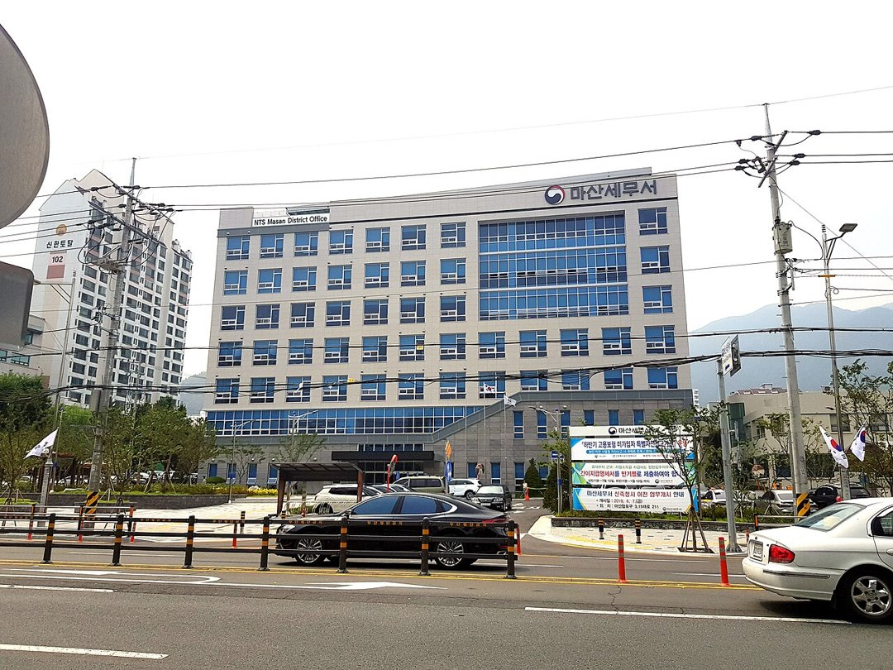

📷 사진 1 자리

▲ 마산세무서(2019년 자료사진) · 사진: Mykim5902 / CC BY-SA 4.0 / 위키미디어 공용
2025년 소득에 대한 근로·자녀장려금은 12월 1일(화)까지 신청할 수 있어요. 지금 신청하면 심사 뒤 산정액의 95%를 2027년 1월 15일(금)에 받아요. 이날이 지나면 2025년 소득분은 더 이상 신청할 수 없어요.
국세청은 아직 신청하지 않은 26만 가구에 안내문을 보냈어요. 안내문을 못 받았어도 요건이 맞으면 신청할 수 있어요.
3줄 요약
나도 대상일까
장려금은 한 가구에 한 명만 받아요. 2025년 부부합산 소득과 재산으로 판단해요.
| 가구 | 근로장려금 소득 | 최대 지급액 |
|---|---|---|
| 단독 | 2,200만 원 미만 | 165만 원 |
| 홑벌이 | 3,200만 원 미만 | 285만 원 |
| 맞벌이 | 4,400만 원 미만 | 330만 원 |
자녀장려금은 18세 미만 자녀가 있고 부부합산 소득이 7,000만 원 미만이면 돼요. 자녀 한 명당 50만~100만 원이에요.
재산은 2025년 6월 1일 기준 가구원 전체 합계가 2억 4천만 원 미만이어야 해요. 대출은 빼 주지 않아요. 1억 7천만 원 이상이면 산정액의 절반만 나와요.
재산에는 부동산과 승용차(지방세법상 시가표준액), 분양권, 예금, 주식, 회원권이 들어가요. 전세 사는 집은 실제 전세금과 집 기준시가의 55% 가운데 적은 금액으로 계산해요. 실제 전세금이 더 적다면 임대차계약서를 내면 그 금액으로 판단해요.
맞벌이는 신청인과 배우자가 각각 총급여 등 300만 원 이상일 때예요. 배우자 소득이 그보다 적으면 홑벌이로 봐요.
5월에 왜 안내를 못 받았을까
국세청 문답에 따르면 회사가 소득자료를 법정기한인 3월 10일 뒤에 내면 5월 정기 안내에서 빠졌어요. 올해부터는 늦게 들어온 자료까지 다시 분석해 1만 가구를 이번 안내 대상에 더했어요.
📷 사진 2 자리
▲ 정부세종청사 정문(2019년 자료사진) · 사진: *Youngjin / CC BY-SA 3.0 / 위키미디어 공용
국세청은 시간제·일용직으로 잠깐 일한 청년이나 지금은 퇴직한 사람도 2025년에 근로·사업·종교인 소득이 있었다면 대상이 될 수 있다고 했어요.
얼마나, 언제 받나
| 신청 시기 | 지급률 | 지급일 |
|---|---|---|
| 5월 정기 신청 | 100% | 지급 완료 |
| 12월 1일까지 기한 후 | 95% | 2027년 1월 15일 |
| 12월 2일부터 | 신청 불가 | - |
예를 들어 단독가구 산정액이 165만 원이면 95%인 156만 7,500원을 받아요. 재산이 1억 7천만 원을 넘는다면 여기서 다시 절반이에요. 안내문의 예상 금액은 심사 결과에 따라 달라지거나 지급되지 않을 수도 있어요.
신청하는 방법
1. 안내문을 받았다면 우편 안내문의 QR코드, 모바일 안내문의 '신청하기', ARS(1544-9944) 중 편한 걸로 신청해요.
2. 안내문이 없다면 홈택스(PC·모바일)에서 로그인 → 장려금 → '안내대상자 여부 조회'부터 해요. 대상이 아니어도 요건이 맞으면 근무처 소득확인서 같은 증빙을 붙여 직접 신청할 수 있어요.
3. 휴대폰이 어렵다면 장려금 상담센터(1566-3636, 평일 9~18시)에 신청 도움을 요청해요.
모바일 안내문에는 한국인터넷진흥원 안심마크가 붙어 있어요. 문자가 의심되면 링크를 누르지 말고 ARS에서 개별인증번호로 신청하면 돼요.
자주 묻는 질문
Q. 12월 1일 저녁에 해도 되나요?
홈택스와 ARS는 6시부터 24시까지 운영해요. 마지막 날은 접속이 몰릴 수 있으니 미리 하세요.
Q. 받을 계좌가 압류돼 있으면요?
국세청은 압류된 계좌로는 장려금을 찾지 못할 수 있다고 안내해요. 다른 계좌를 넣거나 우체국 현금 수령을 고르세요.
Q. 내년엔 기준이 바뀌나요?
정부 세법개정안대로면 2027년 소득분부터 단독가구 최대 180만 원, 소득요건 2,600만 원 미만으로 넓어져요. 2027년 9월 신청분부터예요.
5%가 깎인다고 미루면 남은 95%까지 사라져요. 안내문을 받은 집이라면 큐알코드로 1~2분이면 끝나는 일이에요. 부모님이나 사회초년생 가족에게 '홈택스 안내대상자 조회' 한 번만 권해 보세요.
이번 신청분 지급일은 2027년 1월 15일(금)이에요. 그 전에 홈택스에서 심사 결과를 확인할 수 있어요.
함께 보면 좋은 이슈
끝까지 읽어 주셔서 감사해요. 공감(좋아요) ♥ 꾹, 이웃 추가도 부탁드려요!